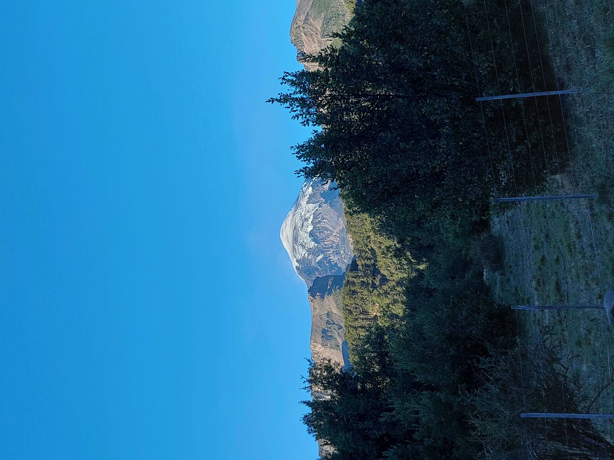
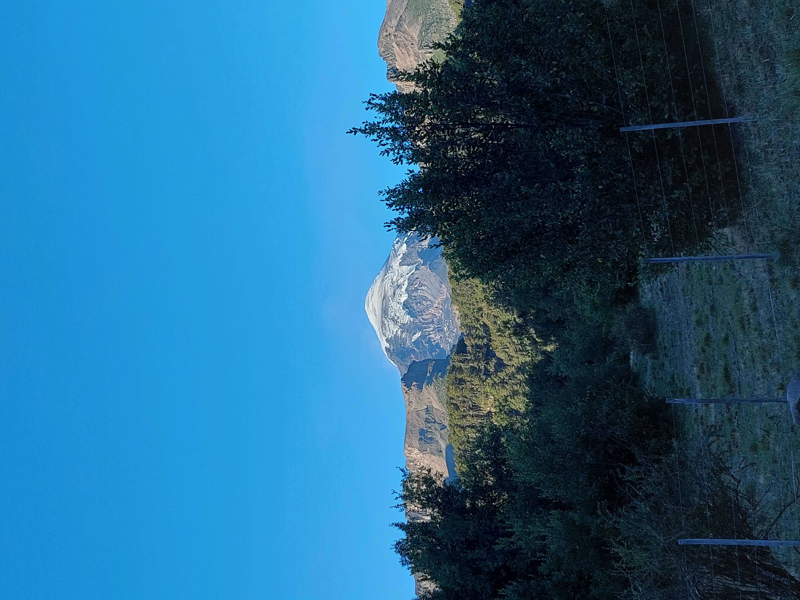

‹
›
Lugares turísticos en SMA

Mirador Arrayanes
Caminata corta desde el centro hasta un mirador con vistas al Lago Lácar y las montañas. Ideal para una salida rápida, con bancos y un cartel explicativo.
Ubicación
Playa Catritre
Una de las playas más tranquilas del lago Lácar, con sombra de árboles, agua cristalina y espacio para picnic.
Ubicación
Costanera del Lago Lácar
Paseo ideal para caminar al atardecer o descansar en los bancos frente al lago. Muy seguro y con buena iluminación.
Ubicación
Cerro Chapelco
Centro de esquí y trekking con vistas espectaculares. Ideal para deportes de invierno o caminatas en verano.
Ubicación